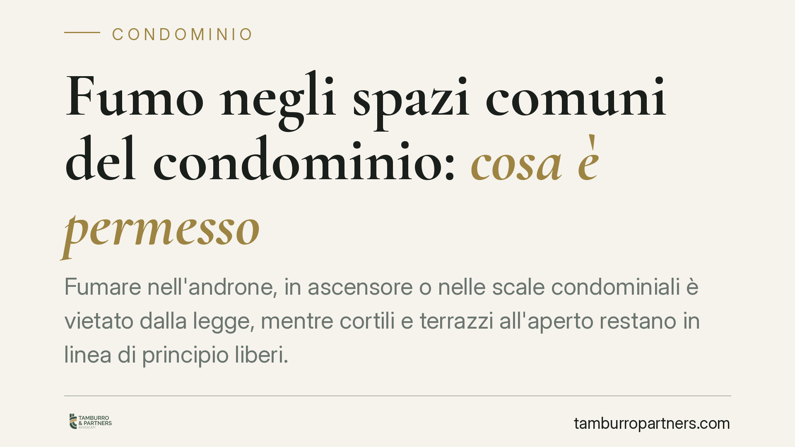
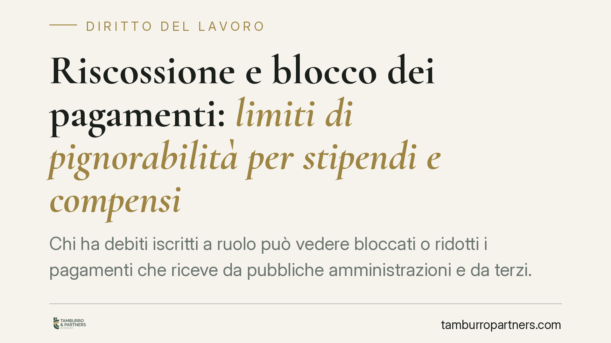
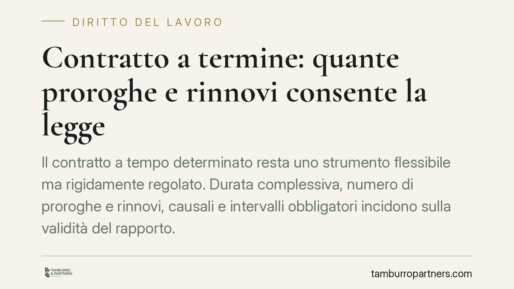
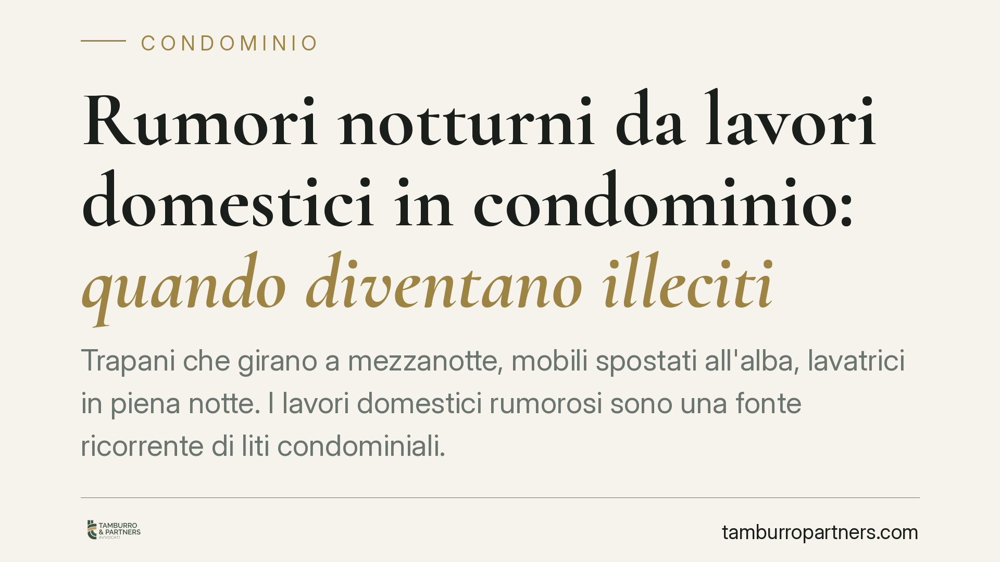
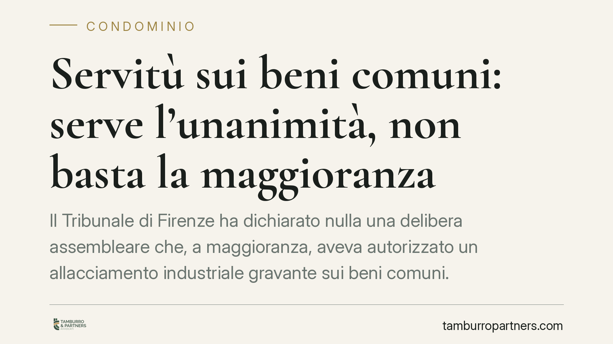
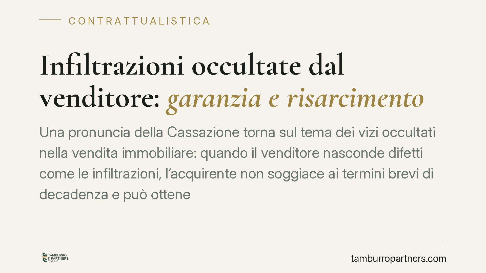
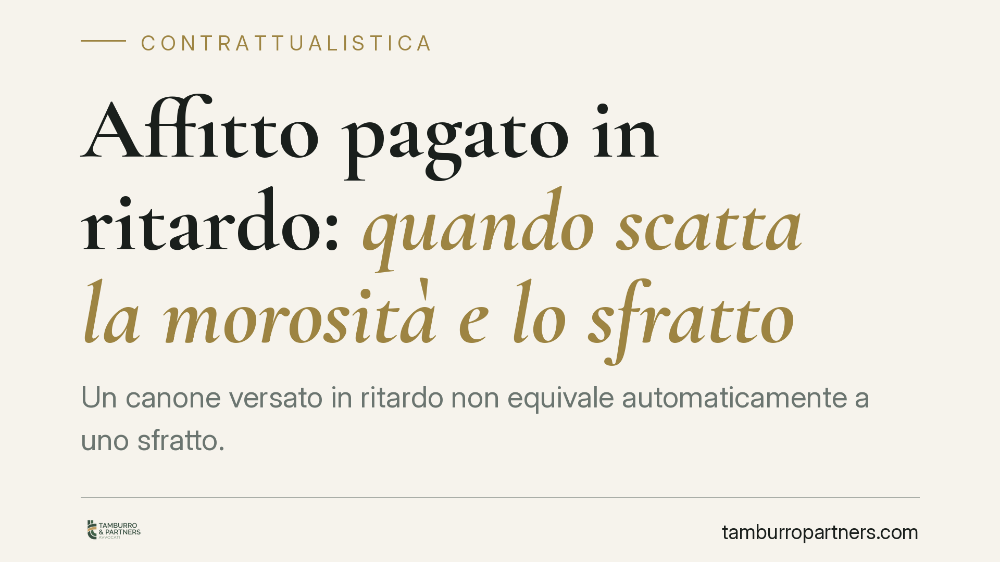
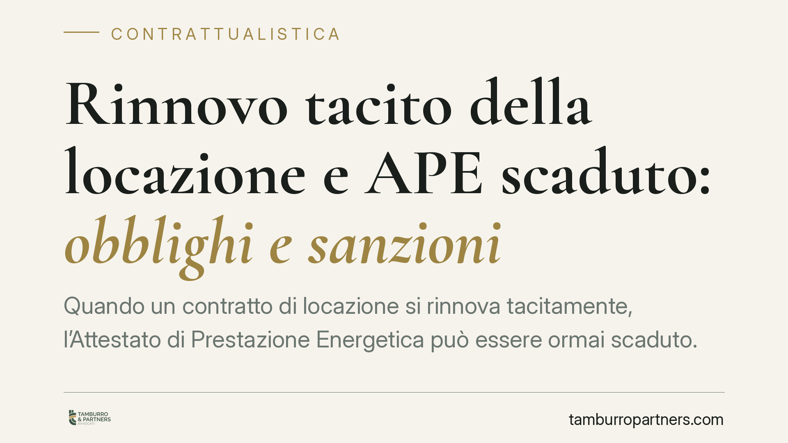

Pignoramento del conto corrente: quali somme sono protette
Il pignoramento del conto corrente non travolge ogni somma depositata. La legge distingue tra crediti già accreditati e accrediti successivi, fissando soglie di impignorabilità per…

Annunci di lavoro discriminatori: la legittimazione del sindacato ad agire in giudizio
Il Tribunale di Trento ha riconosciuto alla Cgil la legittimazione ad agire contro un annuncio di lavoro discriminatorio diffuso da uno chef stellato, pur in assenza di una vittima…

Fondo pensione e cambio lavoro: la portabilità della posizione individuale
Chi cambia lavoro o settore si chiede spesso che fine faccia il capitale versato nel fondo pensione. La regola di base è chiara: il montante accumulato appartiene al lavoratore e p…

Contributi della colf non versati: quando si prescrivono
I contributi previdenziali non versati per una colf non restano esigibili all'infinito. La legge fissa un termine di prescrizione, oltre il quale l'INPS non può più recuperare le s…

Scorrimento delle graduatorie nei concorsi: non è un atto dovuto
Lo scorrimento delle graduatorie nei concorsi pubblici non scatta in automatico. Resta una scelta dell'ente, che però non è libera: a graduatoria ancora valida, indire un nuovo con…

Canne fumarie in condominio: quando serve la SCIA per la facciata
Installare una canna fumaria esterna sulla facciata di un condominio non è un intervento libero. Serve la SCIA e il rispetto dei limiti all'uso delle parti comuni fissati dall'art.…

Mediazione, arbitrato e ADR: cosa dicono le sentenze più recenti
La giurisprudenza recente ha precisato cosa significa partecipare "effettivamente" a una mediazione, quando una clausola arbitrale regge e quali sanzioni colpiscono chi abusa del p…

Locazione senza APE: il contratto è valido?
Stipulare una locazione senza Attestato di Prestazione Energetica non rende nullo il contratto: resta valido ed efficace tra le parti. L'omissione, però, espone locatore e condutto…

Fumo negli spazi comuni del condominio: cosa è permesso
Fumare nell'androne, in ascensore o nelle scale condominiali è vietato dalla legge, mentre cortili e terrazzi all'aperto restano in linea di principio liberi. Il tema riguarda da v…

Riscossione e blocco dei pagamenti: limiti di pignorabilità per stipendi e compensi
Chi ha debiti iscritti a ruolo può vedere bloccati o ridotti i pagamenti che riceve da pubbliche amministrazioni e da terzi. Due meccanismi distinti operano in parallelo: la verifi…
Locazione: quante volte si rinnova tacitamente?
Il contratto di locazione abitativa non muore alla scadenza. In assenza di disdetta tempestiva, si rinnova tacitamente, e questo meccanismo può ripetersi nel tempo. Capire come ope…
Congedo straordinario Legge 104: il caregiver può uscire di casa?
Il caregiver che fruisce del congedo straordinario retribuito previsto dalla Legge 104 non è obbligato a restare confinato in casa. La giurisprudenza ammette brevi uscite per esige…

Contratto a termine: quante proroghe e rinnovi consente la legge
Il contratto a tempo determinato resta uno strumento flessibile ma rigidamente regolato. Durata complessiva, numero di proroghe e rinnovi, causali e intervalli obbligatori incidono…
Contestazione disciplinare: entro quanto rispondere
La lettera di contestazione disciplinare apre una procedura scandita da termini precisi. Il lavoratore ha almeno cinque giorni per difendersi prima che il datore possa irrogare una…
Fondo pensione: il plafond aggiuntivo per chi si iscrive a inizio carriera
Chi aderisce a un fondo pensione nei primi anni di lavoro puo accedere, dal sesto anno di partecipazione, a un plafond aggiuntivo di deducibilita fiscale. Il meccanismo premia chi …
Conto cointestato: chi può prelevare e fino a quanto
Il conto corrente cointestato è strumento diffuso tra coniugi, conviventi e familiari, ma genera dubbi ricorrenti: chi può prelevare e fino a quale importo? La risposta dipende dal…

Rumori notturni da lavori domestici in condominio: quando diventano illeciti
Trapani che battono a mezzanotte, lavatrici in funzione alle due, mobili spostati all'alba. I rumori notturni da lavori domestici sono tra le liti condominiali più frequenti. Il re…

Servitù sui beni comuni: serve l'unanimità, non basta la maggioranza
Il Tribunale di Firenze ha dichiarato nulla una delibera assembleare che, a maggioranza, aveva autorizzato un allacciamento industriale gravante sui beni comuni. La servitù, infatt…
Ferie dei dipendenti: maturazione, indennità e ferie solidali
Le ferie non sono un beneficio concesso dal datore di lavoro, ma un diritto irrinunciabile garantito dalla Costituzione. Capire come maturano, quando spetta l'indennità sostitutiva…

Infiltrazioni occultate dal venditore: garanzia e risarcimento
Una pronuncia della Cassazione torna sul tema dei vizi occultati nella vendita immobiliare: quando il venditore nasconde difetti come le infiltrazioni, l'acquirente non soggiace ai…
Lavori condominiali non urgenti: il singolo condòmino può rifiutarsi di pagare?
Molti condòmini ritengono di potersi sottrarre alle spese per lavori non urgenti deliberati dall'assemblea. Non è così. Una delibera regolarmente approvata vincola anche i dissenzi…

Affitto pagato in ritardo: quando scatta la morosità e lo sfratto
Un canone versato in ritardo non equivale automaticamente a uno sfratto. La legge sull'equo canone fissa soglie precise prima che il ritardo si trasformi in morosità rilevante, e p…
Inquilino moroso: cosa può fare il locatore per recuperare il canone
Quando l'inquilino smette di pagare il canone, il locatore dispone di strumenti precisi per risolvere il contratto e ottenere il rilascio dell'immobile. Conoscere soglie, procedura…
Stipendi pagati e fallimento: revocatoria o inefficacia?
I pagamenti effettuati a titolo di retribuzione godono di una tutela particolare nelle procedure concorsuali. La normativa esenta le erogazioni per lavoro subordinato dall'azione r…
Adesione automatica ai fondi pensione: la novità in arrivo per i neoassunti
Si discute di introdurre, per i neoassunti del settore privato, l'adesione automatica alla previdenza complementare, con possibilità di rinuncia. La misura, allo stato attuale, der…

Rinnovo tacito della locazione e APE scaduto: obblighi e sanzioni
Quando un contratto di locazione si rinnova tacitamente, l'Attestato di Prestazione Energetica può essere ormai scaduto. La questione non è formale: dall'aggiornamento dipendono la…

Infortunio sul lavoro in nero: chi paga cure e danni
Lavorare senza contratto non priva il dipendente delle tutele in caso di infortunio. L'INAIL eroga comunque le prestazioni e il datore risponde dei danni, anche se il rapporto era …

Trasparenza retributiva: il lavoratore può conoscere quanto guadagnano i colleghi?
La direttiva UE 2023/970 sulla trasparenza retributiva, in via di recepimento in Italia, riconosce al lavoratore il diritto di richiedere dati aggregati sulle retribuzioni per cate…

Esonero dal lavoro notturno per i caregiver: cosa cambia per le aziende
Un recente orientamento della Cassazione interviene sull'esonero dai turni notturni per i lavoratori che assistono familiari disabili. La pronuncia incide sull'organizzazione dei t…

Lavori extra nell'appalto: quando il committente deve pagare
Nei contratti di appalto capita spesso che, in corso d'opera, emergano lavorazioni non previste nel preventivo iniziale. Chi le paga? La risposta non è scontata e dipende dall'auto…